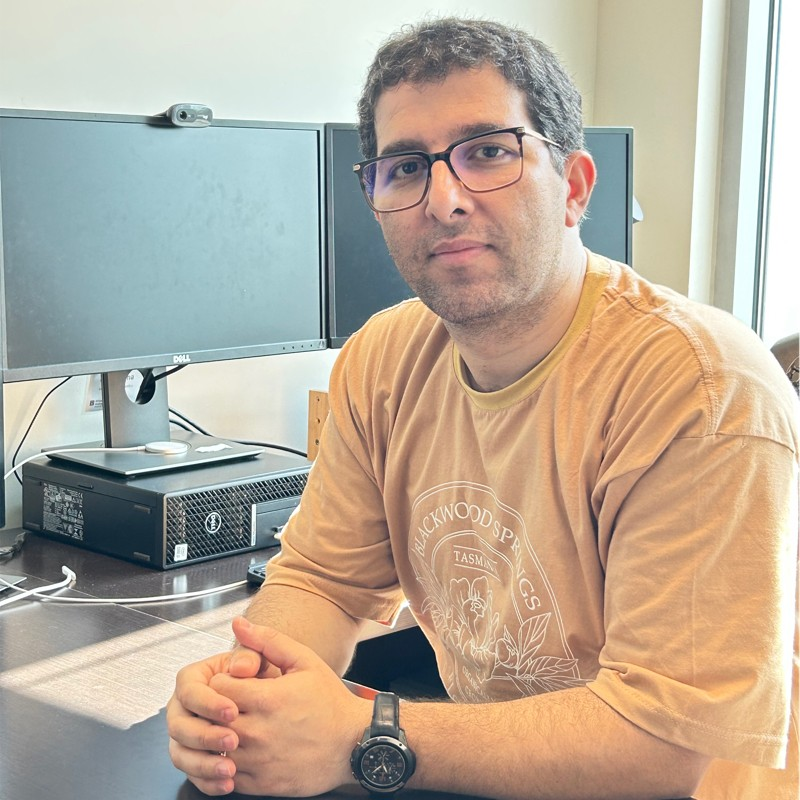
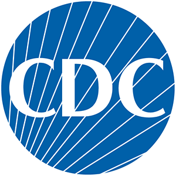
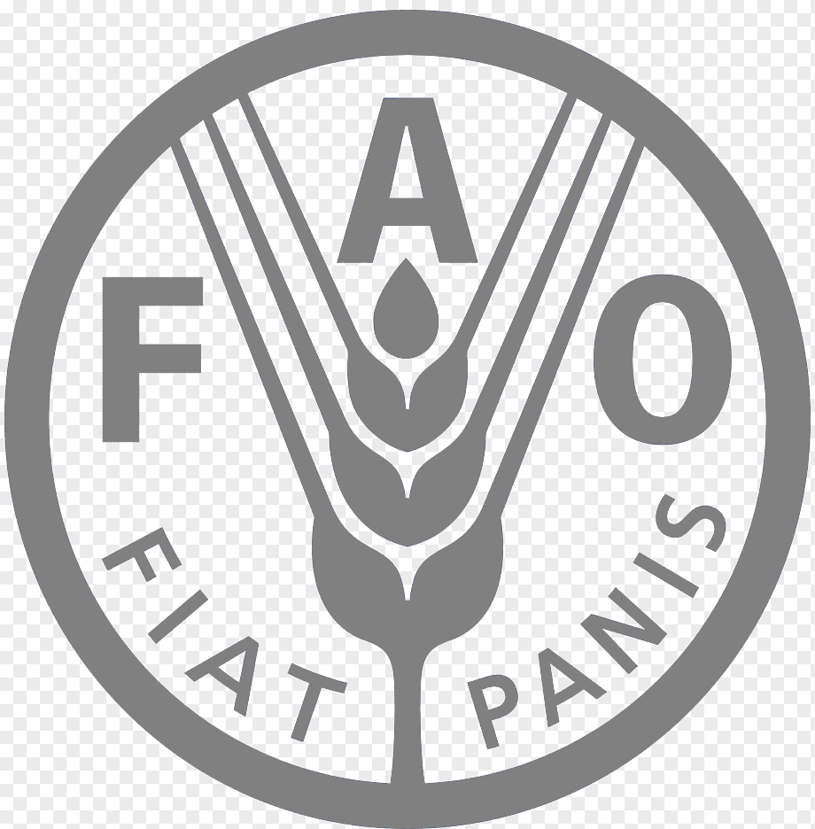

By adhering to these standards, I am able to stay updated on the latest advancements in the field, ensuring that my knowledge and skills remain relevant and competitive. These standards have shaped my approach to disease pathogenesis, genetic analysis, and public health safety, guiding my work to meet the strictest global protocols.
WOAH - World Organisation for Animal Health
CFR - Animal and Plant Health Inspection Service
CDC - DISEASE CONTROL AND PREVENTION

ISO/IEC 17025 - Testing and calibration laboratories
FDA - Food and Drug Administration
EU - THE EUROPEAN PARLIAMENT
FAO/WHO- C O D E X A L I M E N T A R I U S
U.S. Pharmacopeia - USP Biologics™
British Pharmacopoeia - BP

Proteomics, the large-scale study of proteins, has been instrumental in transforming our understanding of cellular processes and functions. I have primarily utilized this powerful field to investigate host-pathogen protein-protein interactions, shedding light on the molecular mechanisms that drive disease and immune responses. I have extensive experience in extracting and analyzing small molecules, including residuals in formulated products and complex downstream purification matrices. My expertise spans a broad range of derivatization and detection methodologies, including protein electrophoresis, chromatography, spectroscopy, and mass spectrometry, ensuring precise and reliable results in even the most challenging analytical environments.
With over a decade of laboratory experience and a PhD in the field, complemented by three years as a Postdoctoral Fellow, I have a deep understanding of genomics and its applications. Key areas where genomics plays a pivotal role include: 1- Disease Research: Identifying genetic contributions to health conditions, aiding in the development of diagnostic tests, treatments, and cures based on genetic targets. 2- Drug & Vaccine Development: Understanding genetic influences on drug or vaccine response to develop targeted therapies and personalized medicine. 3- Pharmacogenomics, in particular, explores the link between genetics and drug reactions. 4- Rare Disease Diagnosis: Using sequencing technologies to pinpoint the genetic causes of rare or undiagnosed diseases. 5- Risk Assessment: Evaluating individual risk for diseases, such as cancer, based on genomic variants, facilitating genetic counseling.
I specialize in advanced molecular diagnostics and genetic analysis, with a focus on zoonotic infectious diseases and practicing One Health in the field and at the bench. My work delves into key areas such as:
Proteomics, the large-scale study of proteins, has been instrumental in transforming our understanding of cellular processes and functions. I have primarily utilized this powerful field to investigate host-pathogen protein-protein interactions, shedding light on the molecular mechanisms that drive disease and immune responses.
You're not a gaming God by any stretch of the imagination.